Приложение №1
Инвестиционная декларация
к договору страхования по программе «{{policy.product}}»
№ {{policy.number}} от {{policy.issueDate}} г. (далее – Декларация)
ИНФОРМАЦИЯ, ПРЕДОСТАВЛЯЕМАЯ БАНКОМ ВТБ (ПУБЛИЧНЫМ
АКЦИОНЕРНЫМ ОБЩЕСТВОМ), ДЕЙСТВУЮЩИМ ОТ ИМЕНИ СТРАХОВОЙ
ОРГАНИЗАЦИИ ООО СК « РОСГОССТРАХ ЖИЗНЬ», ПРИ ЗАКЛЮЧЕНИИ С
ФИЗИЧЕСКИМ ЛИЦОМ ДОГОВОРА ДОБРОВОЛЬНОГО СТРАХОВАНИЯ ЖИЗНИ С
УЧАСТИЕМ СТРАХОВАТЕЛЯ В ИНВЕСТИЦИОННОМ ДОХОДЕ СТРАХОВЩИКА
№ {{policy.number}} от {{policy.issueDate}} г.
| N п/п | Вид информации | Содержание предоставляемой информации | Подпись физического лица, подтверждающая его ознакомление с информацией |
| 1 | 2 | 3 | 4 |
| 1 | Информация о договоре добровольного страхования жизни с участием страхователя в инвестиционном доходе страховщика (далее - договор добровольного страхования) | 1.1 Переданные по договору добровольного страхования денежные средства не подлежат страхованию в соответствии с Федеральным законом от 23 декабря 2003 года N 177-ФЗ «О страховании вкладов в банках Российской Федерации» |
С информацией ознакомлен |
| 1.2 Отсутствует гарантия получения доходности* |
С информацией ознакомлен |
||
| 1.3 Договор добровольного страхования не является договором банковского вклада (банковского счета) |
С информацией ознакомлен |
* Наличие и величина дополнительного инвестиционного дохода, обеспечивающего доходность по договору добровольного страхования, зависят от результатов инвестиционной деятельности ООО СК «Росгосстрах Жизнь». Дополнительный инвестиционный доход формируется в соответствии с Правилами страхования и подлежит выплате при наступлении страховых случаев «ДОЖИТИЕ» или «СМЕРТЬ по любой причине», либо при досрочном расторжении договора добровольного страхования.
Основные положения договора добровольного страхования указаны в Информации (памятке) о договоре добровольного страхования, в том числе о его условиях и рисках, связанных с его исполнением.

Страховщик: ООО СК «Росгосстрах Жизнь», лицензии Банка России:
{{insurer.license}}, ИНН {{insurer.INN}}, КПП {{insurer.KPP}}
Юридический адрес: {{insurer.address}}
Реквизиты банка: {{bankInfo}}
Телефон круглосуточного Контакт-центра: 8 800 100 12 10 (бесплатный номер для
звонков по России).
Для оплаты считайте данный штрих код
в мобильном приложении интернет-банка
ДОГОВОР СТРАХОВАНИЯ № {{policy.number}} от {{policy.issueDate}} г.
по программе «{{policy.product}}»
на основании {{policy.rule}} (далее по тексту – Правила).
| I. СТРАХОВАТЕЛЬ | ||||||
| Фамилия Имя Отчество: | {{holder.fullName}} | Пол: | {{holder.gender}} | |||
| Дата рождения: | {{holder.dateOfBirth}} | Место рождения: | {{holder.birthPlace}} | |||
| Телефон: | {{holder.phoneNumber}} | Гражданство: | {{holder.citizenship}} | |||
| E-mail: | {{holder.email}} | |||||
| Документ, удостоверяющий личность: | {{holder.document.typeAndSN}} | Дата выдачи: | {{holder.document.dateOfIssue}} | |||
| Кем выдан: | {{holder.document.issuedBy}} | |||||
| Адрес постоянной регистрации: | {{holder.registrationAddress}} | |||||
| Почтовый адрес: | {{holder.postAddress}} | |||||
| II. ЗАСТРАХОВАННЫЙ | ||||||
| Фамилия Имя Отчество: | {{insured.fullName}} | Пол: | {{insured.gender}} | |||
| Дата рождения: | {{insured.dateOfBirth}} | Место рождения: | {{insured.birthPlace}} | |||
| Телефон: | {{insured.phoneNumber}} | Гражданство: | {{insured.citizenship}} | |||
| E-mail: | {{insured.email}} | |||||
| Документ, удостоверяющий личность: | {{insured.document.typeAndSN}} | Дата выдачи: | {{insured.document.dateOfIssue}} | |||
| Кем выдан: | {{insured.document.issuedBy}} | |||||
| Адрес постоянной регистрации: | {{insured.registrationAddress}} | |||||
| Почтовый адрес: | {{insured.postAddress}} | |||||
| Выгодоприобретатель {{this.index}}. Доля {{this.percentage}}% | ||||||
| Фамилия Имя Отчество, Дата рождения: | {{this.beneficiar.fullName}}, {{this.beneficiar.dateOfBirth}} | Пол: | {{this.beneficiar.gender}} | |||
| Дата рождения: | {{this.beneficiar.dateOfBirth}} | Место рождения: | {{this.beneficiar.placeOfBirth}} | |||
| Телефон: | {{this.beneficiar.phoneNumber}} | E-mail: | {{this.beneficiar.email}} | Гражданство: | {{this.beneficiar.citizenship}} | |
| Документ, удостоверяющий личность: | {{this.beneficiar.document.typeAndSN}} | Дата выдачи: | {{this.beneficiar.document.dateOfIssue}} | |||
| Кем выдан: | {{this.beneficiar.document.document.issuedBy}} | |||||
| Адрес постоянной регистрации: | {{this.beneficiar.registrationAddress}} | |||||
| Почтовый адрес: | {{this.beneficiar.postAddress}} | |||||
В случае если общая доля менее 100%, Выгодоприобретателями на случай смерти Застрахованного по оставшейся доле являются наследники Застрахованного по закону.
{{/if}} {{else}}Наследники по закону
{{/if}}| IV. СТРАХОВЫЕ РИСКИ, СТРАХОВЫЕ СУММЫ, СТРАХОВАЯ ПРЕМИЯ | ||
| Страховые риски | Страховая сумма, {{currency}} | Размер единовременного страхового взноса, {{currency}} |
| {{this.insuranceRisks}} | {{this.sumInsured}} | {{this.insurancePremium}} |
| {{this.insuranceRisks}} | {{this.sumInsured}} | {{this.insurancePremium}} |
| {{risk.premium.sum}} | ||
| {{this.insuranceRisks}} | {{this.sumInsured}} | |
| {{this.insuranceRisks}} | {{this.sumInsured}} | |
При определении страховой суммы в договоре страхования в иностранной валюте страховая выплата производится в рублях по курсу Банка России на дату выплаты. Банковские расходы, связанные с осуществлением страховой выплаты, оплачиваются получателем платежа.
| Периодичность оплаты страховой премии: | единовременно | |
| Размер страховой премии: | {{risk.premium.sum}} {{currency}} | |
| Страховая премия уплачивается: | {{experationDate}} | |
| V. СРОК ДЕЙСТВИЯ ДОГОВОРА СТРАХОВАНИЯ | ||
| Срок действия договора страхования: | {{insuranceTerms.text}} | Договор страхования вступает в силу с {{insuranceTerms.startDate}} и действует до {{insuranceTerms.endDate}} включительно. |
| Стороны могут договориться о продлении срока действия договора страхования путем подписания дополнительного соглашения. | ||
| VI. ВЫКУПНЫЕ СУММЫ | ||
| При расторжении договора страхования выкупная сумма определяется в пределах сформированного в установленном порядке страхового резерва на день прекращения договора страхования. | ||
| Период действия договора страхования | Выкупная сумма, {{currency}} | |
| начало | окончание | |
| {{this.periodStartDate}} | {{this.periodEndDate}} | {{this.surrenderValue}} |
При определении выкупной суммы в договоре страхования в иностранной валюте выплата выкупной суммы переводится в рублях по курсу Банка России на дату выплаты. Банковские расходы, связанные с осуществлением выплаты выкупной суммы, оплачиваются получателем платежа.
| VII. ДЕКЛАРАЦИЯ О СОСТОЯНИИ ЗДОРОВЬЯ И ФАКТОРАХ РИСКА ЗАСТРАХОВАННОГО | ||
| Я, {{insured.fullName}},подтверждаю, что: | ||
| Настоящим я, {{insured.fullName}}, | подтверждаю, что: | не подтверждаю, что: |
{{this}}
| VIII. ДЕКЛАРАЦИЯ СТРАХОВАТЕЛЯ И ЗАСТРАХОВАННОГО | ||
| Страхователь и Застрахованный подтверждают, что: | ||
| Настоящим Страхователь и Застрахованный | подтверждают, что: | не подтверждают, что: |
{{this}}
| Тип актива | ISIN | Доля | Допустимое отклонение от доли актива |
| Акции | |||
| Эмитент: {{this.strategy.emitent}} (название актива: {{this.strategy.strategyName}}) | {{this.strategy.isin}} | {{this.sharePercent}}% | 10,00% |
| Облигации | |||
| Эмитент: {{this.strategy.emitent}} (название актива: {{this.strategy.strategyName}}) | {{this.strategy.isin}} | {{this.sharePercent}}% | 10,00% |
| Депозитарные расписки | |||
| Эмитент: {{this.strategy.emitent}} (название актива: {{this.strategy.strategyName}}) | {{this.strategy.isin}} | {{this.sharePercent}}% | 10,00% |
| Американские депозитарные расписки (АДР) | |||
| Эмитент: {{this.strategy.emitent}} (название актива: {{this.strategy.strategyName}}) | {{this.strategy.isin}} | {{this.sharePercent}}% | 10,00% |
| Инструменты денежного рынка | {{invDeclaration.totalPercent}}% | 100,00% |
| Где | 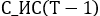 | - стоимость инвестиционного счета, определенная Страховщиком на дату, предшествующую дате расчета ; |
| 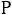 | - показатель расходов Страховщика на администрирование договора страхования, выраженный в процентах от суммарной стоимости активов инвестиционного счета, установленный на дату расчета ; | |
| 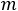 | - количество календарных дней в году (365 или 366), соответствующем дате расчета . |
| Основание выплаты ДИД | Наступление страхового случая по рискам «Дожитие», «Смерть» | Досрочное прекращение договора страхования по истечении 14 календарных дней со дня его заключения по причинам иным, чем наступление страхового случая | Обращения Застрахованного (или иного лица, в пользу которого заключен Договор страхования по риску «Дожитие») в течение срока страхования за выплатой ДИД (или его части) |
| Количество полных лет действия договора страхования, истекших до даты | М | М | М |
| 0 | 0% | {{invDeclaration.insurerShareExpensesByYear_0_Percent}}% | {{invDeclaration.insurerShareExpensesByYear_0_Percent}}% |
| 1 | 0% | {{invDeclaration.insurerShareExpensesByYear_1_Percent}}% | {{invDeclaration.insurerShareExpensesByYear_1_Percent}}% |
| 2 | 0% | {{invDeclaration.insurerShareExpensesByYear_2_Percent}}% | {{invDeclaration.insurerShareExpensesByYear_2_Percent}}% |
| 3 и более | 0% | {{invDeclaration.insurerShareExpensesByYear_3_Percent}}% | {{invDeclaration.insurerShareExpensesByYear_3_Percent}}% |
| Где | 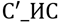 | - стоимость инвестиционного счета на дату начала периода инвестирования; |
| 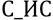 | - стоимость инвестиционного счета на дату начала срока действия договора страхования, определенная в соответствии с п. 1.6 Декларации; | |
| 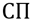 | - страховая премия по договору страхования; | |
| 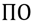 | - количество календарных дней периода охлаждения, установленного договором страхования; | |
| 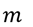 | - количество календарных дней в году (365 или 366), соответствующем дате заключения договора страхования; | |
| 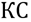 | - значение Ключевой ставки Банка России, установленное на дату заключения договора страхования. |
| Где | - дата расчета, не ранее даты начала периода инвестирования; | |
| 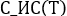 | - стоимость инвестиционного счета на дату расчета | |
| 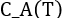 | - стоимость активов, относящихся к инвестиционному счету, определенная по справедливой стоимости Страховщиком в соответствии внутренними нормативными документами на дату расчета . Оценка справедливой стоимости активов осуществляется Страховщиком в соответствии с Международным стандартом финансовой отчетности (IFRS) 13 «Оценка справедливой стоимости», введенным в действие на территории Российской Федерации приказом Министерства финансов Российской Федерации от 28.12.2015 № 217н. | |
| - расходы Страховщика, определенные в соответствии с п. 3.1 Декларации. |
| Основание расчета/выплаты ДИД | Дата начала периода определения ДИД |
| Наступление страхового случая по риску «Дожитие» | Дата окончания срока действия договора страхования |
| Наступление страхового случая по риску «Смерть» | Самая ранняя из дат:
1) дата получения Страховщиком документов, необходимых для
осуществления страховой выплаты;
2) дата окончания срока действия договора страхования.
|
| Досрочное прекращение договора страхования по истечении 14 календарных дней со дня его заключения по причинам иным, чем наступление страхового случая | Дата получения Страховщиком документов, необходимых для досрочного прекращения договора страхования |
| Окончание срока действия договора страхования | Дата окончания срока действия договора страхования |
| Основание выплаты ДИД | |
| Наступление страхового случая по риску «Дожитие» | 100% |
| Наступление страхового случая по риску «Смерть» | 100% |
| Досрочное прекращение договора страхования по истечении 14 календарных дней со дня его заключения по причинам иным, чем наступление страхового случая | 100% |
| Обращения Застрахованного (или иного лица, в пользу которого заключен Договор страхования по риску «Дожитие») в течение срока страхования за выплатой ДИД (или его части) | Доля указывается в заявлении на выплату ДИД |
Информация
о договоре добровольного страхования, в том числе о его
условиях и рисках, связанных с его исполнением
по программе «{{cbrMemo.policy.product}}» № {{cbrMemo.policy.number}} от {{cbrMemo.policy.issueDate}} г.
Используйте информацию, содержащуюся в данной таблице,
при принятии решения о том, подходит ли Вам предлагаемая
услуга с учетом уровня Вашего среднемесячного дохода
| Разница между страховой суммой по риску «Дожитие» и совокупной страховой премией по договору добровольного страхования |
Разница между страховой суммой по риску «Смерть» совокупной страховой премией по договору добровольного страхования |
Разница между страховой суммой по риску «Смерть НС» и совокупной страховой премией по договору добровольного страхования |
| {{cbrMemo.differenceDLP36914.printDiffSurvavial1}}1 {{cbrMemo.differenceDLP36914.printDiffSurvavial2}} | {{cbrMemo.differenceDLP36914.printDiffDeath1}}1 {{cbrMemo.differenceDLP36914.printDiffDeath2}} | {{cbrMemo.differenceDNS36414.printDiffDeath1}}1 {{cbrMemo.differenceDNS36414.printDiffDeath2}} |
| № п/п | ОПИСАНИЕ СОДЕРЖАНИЯ ПРЕДОСТАВЛЯЕМОЙ ИНФОРМАЦИИ | ||||||||||
| 1 |
Информация о Страховщике
|
Полное наименование: Общество с ограниченной
ответственностью Страховая
компания «Росгосстрах
Жизнь»
(далее – Страховая компания или Страховщик). Лицензии Банка России
{{cbrMemo.insurer.license}}.
Кредитный рейтинг: {{cbrMemo.creditRating}}
|
|||||||||
| 2 |
Информация о доходности по договорам добровольного страхования с участием
Страхователя в
инвестиционном доходе Страховщика, по которым обязательства по уплате страховой суммы по
риску
Дожитие за 3 (три) предшествующих календарных года прекращены исполнением
|
Расчет доходности невозможен в силу отсутствия договоров с участием
Страхователя в инвестиционном доходе Страховщика, по которым обязательства по уплате
страховой суммы по риску Дожитие за 3 (три) календарных года, предшествующих заключению
настоящего
договора, прекращены исполнением и которые содержат условия, аналогичные заключаемому
договору.
|
|||||||||
| 3 |
Предупреждение о риске:
|
|
|||||||||
| 4 |
Информация о праве получателя страховых услуг отказаться от договора
добровольного страхования,
порядке определения размера страховой выплаты, порядке и сроке осуществления страховой
выплаты
по каждому страховому риску, обязанности Страховщика удержать налог при расчете страховой
выплаты
|
|
|||||||||
| 5 |
Информация о размере денежных средств (в процентах на день предоставления
информации),
направляемых на обеспечение исполнения обязательств Страховщика по договору добровольного
страхования по выплате страховой суммы и инвестиционного дохода
|
{{cbrMemo.commission.allOutcome}}% от страховой премии (суммы страховых
взносов за
весь период действия
договора страхования) в размере {{cbrMemo.commission.allPremium}} рублей1.
|
|||||||||
| 6 |
Информация о размерах агентского вознаграждения, комиссионного
вознаграждения, а также платежей,
связанных с заключением и исполнением договора добровольного страхования (в процентах)
|
{{cbrMemo.commission.allIncome}} %.
|
|||||||||
|
Примечание к пунктам 5 и 6:
Сумма денежных средств за весь срок действия договора добровольного
страхования, подлежащих
передаче получателем страховых услуг, направляется на обеспечение исполнения обязательств
Страховщика по выплате выгодоприобретателю страховой суммы и инвестиционного дохода, на
выплату
агентского вознаграждения, комиссионного вознаграждения, а также на платежи, связанные с
заключением и исполнением договора добровольного страхования, и составляет 100% (сто
процентов).
|
|||||||||||
| 7 |
Информация о способе определения дохода по договору добровольного
страхования жизни, а также,
если применимо, перечне показателей, от значения (изменения значений) которых зависит размер
дохода по договору добровольного страхования
|
Страховщик в течение периода инвестирования приобретает следующие выбранные Страхователем
инвестиционные активы,
которые формируют структуру инвестиционного счета:
{{#each invDeclaration.shares}}
{{this.payOffTypePrintout}}: {{this.strategy.strategyName}} (эмитент:
{{this.strategy.emitent}}; ISIN: {{this.strategy.isin}});
{{/each}}
{{#each invDeclaration.bonds}}
{{this.payOffTypePrintout}}: {{this.strategy.strategyName}} (эмитент:
{{this.strategy.emitent}}; ISIN: {{this.strategy.isin}});
{{/each}}
{{#each invDeclaration.depositaryReceipts}}
{{this.payOffTypePrintout}}: {{this.strategy.strategyName}} (эмитент:
{{this.strategy.emitent}}; ISIN: {{this.strategy.isin}});
{{/each}}
{{#each invDeclaration.americanDepositaryReceipts}}
{{this.payOffTypePrintout}}: {{this.strategy.strategyName}} (эмитент:
{{this.strategy.emitent}}; ISIN: {{this.strategy.isin}});
{{/each}}
Инструменты денежного рынка (брокерский счет: {{invDeclaration.brokerAccountNumber}},
{{invDeclaration.brokerName}};
расчетный счет: {{invDeclaration.bankAccount}}, {{invDeclaration.bankFullName}}).
В период действия договора страхования структура инвестиционного счета может измениться
по соглашению сторон / по результатам инвестирования, о чем Страховщик информирует
Страхователя согласованным сторонами способом.
Размер ДИД определяется как стоимость инвестиционного счета
на дату
расчета .
Выплата ДИД (или его части) осуществляется за вычетом расходов Страховщика () на досрочное прекращение
договора страхования или выплаты ДИД (или его части) в течение срока страхования.
Стоимость инвестиционного счета () на дату
расчета определяется по
формуле:
,
где -
стоимость активов, относящихся к инвестиционному счету,
определенная по справедливой стоимости Страховщиком в соответствии внутренними нормативными
документами на дату расчета ;
- расходы
Страховщика.
Расходы Страховщика:
1) Расходы Страховщика () на администрирование договора страхования рассчитываются
на дату расчета по
формуле: ,
где -
стоимость инвестиционного счета,
определенная Страховщиком на дату, предшествующую дате расчета ;
- показатель расходов
Страховщика
на администрирование договора страхования, выраженный в процентах от суммарной стоимости
активов
инвестиционного счета, установленный на дату расчета (годовой показатель
составляет
{{invDeclaration.investmentMFPercent}}%
на дату начала периода инвестирования); - количество календарных дней в году (365 или 366),
соответствующем дате расчета .
2) Доля расходов Страховщика (), выраженная в процентах от размера ДИД, на досрочное
прекращение договора страхования или выплаты ДИД (или его части) в течение срока страхования
зависит от основания выплаты ДИД и количества полных лет действия договора страхования,
истекших до даты :
а) = 0%, в случае
выплаты ДИД при наступлении страхового случая по рискам «Дожитие»
или «Смерть», а также в случае досрочного прекращения договора страхования и/или выплаты ДИД
(или его части)
в течение срока страхования, если на дату расчета
договор страхования действовал более 4 полных лет (включительно);
б) =
{{invDeclaration.insurerShareExpensesByYear_0_Percent}}% в случае досрочного прекращения
договора страхования и/или выплаты ДИД (или его части)
в течение срока страхования, если на дату расчета
договор страхования действовал менее 1 полного года;
в) =
{{invDeclaration.insurerShareExpensesByYear_1_Percent}}% в случае досрочного прекращения
договора страхования и/или выплаты ДИД (или его части)
в течение срока страхования, если на дату расчета
договор страхования действовал менее 2 полных лет;
г) =
{{invDeclaration.insurerShareExpensesByYear_2_Percent}}% в случае досрочного прекращения
договора страхования и/или выплаты ДИД (или его части)
в течение срока страхования, если на дату расчета
договор страхования действовал менее 3 полных лет.
ДИД не выплачивается в случаях, которые предусмотрены страховым законодательством Российской
Федерации,
а также в случаях, когда Страховщик не рассчитал ДИД согласно условиям договора страхования
в связи с тем, что:
1) ДИД по договору страхования зависит от исполнения обязательств лицом, обязанным по ценной
бумаге,
и/или стороной договора, являющегося производным финансовым инструментом, договора
банковского вклада,
поименованным в договоре страхования, и такие лица не исполнили свои обязательства;
2) получение Страховщиком информации о значении (изменении значения) показателя, от которого
зависит
размер ДИД по договору страхования, невозможно и у Страховщика имеются документы,
подтверждающие невозможность получения такой информации.
Дополнительно рекомендуем ознакомиться с Инвестиционной декларацией (приложение к договору
страхования),
особенно с рисками, связанными с инвестированием.
|
|||||||||
1По курсу Банка России на дату заключения договора страхования, в случае если договор страхования заключен в валюте отличной от рублей
2Указание Банка России от 20.11.2015 № 3854-У «О минимальных (стандартных) требованиях к условиям и порядку осуществления отдельных видов добровольного страхования».
Приложение к Информации о договоре добровольного страхования, в том числе о его условиях и рисках,
связанных
с его исполнением
по программе «{{cbrMemo.policy.product}}» № {{cbrMemo.policy.number}} от {{cbrMemo.policy.issueDate}} г.
Таблица выкупных сумм
При расторжении договора страхования выкупная сумма определяется в пределах сформированного в установленном порядке страхового резерва на день прекращения договора страхования.
| Период действия договора страхования | Выкупная сумма, {{cbrMemo.currency}} | |
| начало | окончание | |
| {{this.periodStartDate}} | {{this.periodEndDate}} | {{this.surrenderValue}} |